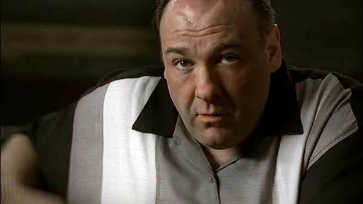
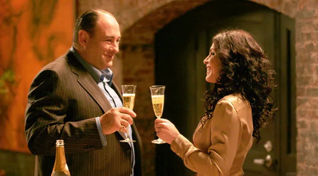
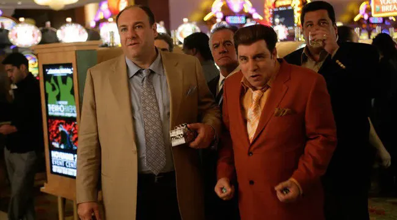
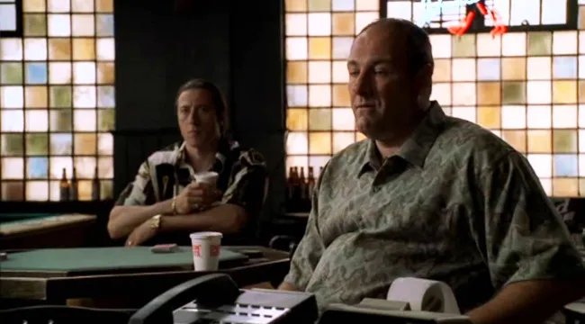
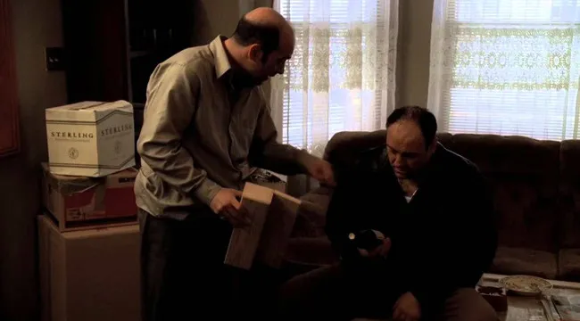
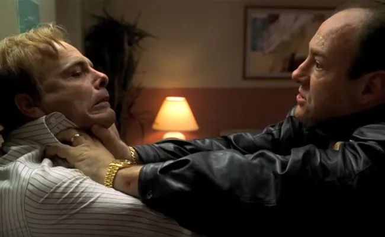
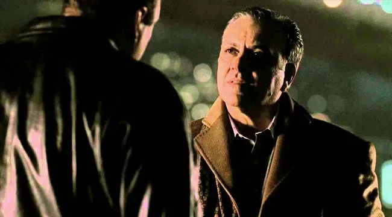

As 7 Piores decisões de negócios de Tony Soprano
Quando você ouve as palavras “chefe da máfia”, a primeira coisa que lhe vem à mente provavelmente não será “portfólio de negócios bem diversificado”. No entanto, Tony Soprano (James Gandolfini), chefe interino da família do crime DiMeo e personagem central de Os Sopranos viu seu império crescer substancialmente ao longo das seis temporadas.
Ainda assim, como um homem impaciente com muito pouco controle de impulso, ele inevitavelmente tomou algumas decisões terríveis que acabou por custar-lhe mais no final.
Com isso em mente, aqui está uma classificação de alguns das “piores decisões de negócios de Tony Soprano.”
7) Ele Vendeu Alguns Imóveis
“A ala norte é a ala norte,” Tony diz a Julianna (Julianna Margulies), uma corretora que fica de olho em uma de suas propriedades comerciais em nome da empresa Jamba Juice.
De primeira, ele explica toscamente que não está interessado (em vender seu prédio), embora ela lhe perturbasse lembrando-o que ele era um homem de negócios. Todavia, Tony recusa-se a ceder, mencionando a importância de sua comunidade sobre um ganho financeiro.
As nobres intenções dele para com seu antigo bairro são postas de lado e ele eventualmente cede e vende; em suma como uma oportunidade de aumentar logo suas possibilidades de se deitar com Julianna. Então, tão logo o champanhe fora derramado e os papéis assinados, Tony pensa novamente em sua esposa, Carmela, e abruptamente agarra a situação toda.
Ele tenta depois reacender sua chance de ter um caso com a corretora, mas não consegue fazê-lo, o que o deixa com seus sentimentos feridos, com um bairro que se enobrecia, e quase meio milhão em espécie. Essa última parte faz isso soar como um negócio bem decente, mas se Tony tivesse esperado até que mais algumas empresas chegassem no bairro, ele poderia ter conseguido um melhor preço.
6) Pedir Dinheiro Emprestado para Hesh
Este não é tanto um problema de negócios quanto é um problema de estilo de vida que afeta o seu negócio, especificamente, seus jogos de azar constantes.
Quando o associado da família, Hesh (Jerry Adler), explica a seu afilhado Eli (Geoffrey Canto), que grande parte de sua renda vinha de jogos de azar, e praticamente, viver nesse ambiente, deixa Tony precisando de dinheiro sempre que faz algum desgoverno. E é durante um desses desgovernos que ele Tony pede um empréstimo de curto prazo a Hesh, na quantia de US$ 200.000.
Embora a noção de emprestar dinheiro a um amigo já seja uma proposição arriscada (e uma que virá mais tarde nesta lista), Tony torna a situação pior, constantemente “castigando” Hesh sobre a dívida.
Ele começa jogando uns verdes sobre questões de pagamento contra o chefe principal, mas se sai tão mal que põe sua amizade com Hesh na berlinda. O que também afeta sua vida doméstica, ao tentar convencer sua esposa Carmela a pôr dinheiro dela mesma em uma suposta aposta infalível, e isso o leva a perder tudo quando as coisas não saíram de seu jeito.
5) Tornar Gigi um Capitão
Ralph (Joe Pantoliano) pode ter sido um dos personagens mais desprezíveis da história em “Os Sopranos”, mas no começo, ele estava desesperado para impressionar Tony e queria se tornar capitão do bando Aprile para obter maior reconhecimento. Tony, que odiava Ralph mais que a maioria das pessoas, recusou-se a dar-lhe a posição, mesmo embora Ralph realmente a merecesse, com base no que ele obtivera para a família. Em vez disso, Tony deu o cargo a Gigi Cestone (John Fiore), um soldado bem respeitado, porém um que não estava pronto a lidar com Ralph como subordinado.
As tensões continuaram a aumentar entre Tony e Ralph, forçando Tony a brigar com a ideia de rebaixar Gigi, mesmo embora isso fizesse com que fosse parecer fraco e indeciso. Ralph, nesse interim, usou a oportunidade para falar merda de Tony para o bando sempre que Gigi estivesse ausente, dando motivo para Tony se preocupar com um possível motim. Por fim, o ataque cardíaco fatal que Gigi teve no dia de Ação de Graças acaba resolvendo o problema – o que permitiu que Ralph obtivesse a promoção que ele tão desesperadamente queria, e também que Tony preenchesse uma posição vaga na organização com um top conquistador
4) Emprestar Dinheiro para Artie
Uma outra demonstração de por que fazer negócios com os amigos nunca realmente funciona: eis o amigo de infância de Tony, Artie Bucco (John Ventimiglia), que precisa de US$ 50.000 emprestado à curto prazo. A história é que ele quer investir em um novo licor, porém ele na verdade só quer “aparecer” para sua nova anfitriã Élodie (Murielle Arden). Artie vai primeiro a Ralph, atrás do dinheiro, porém este lhe diz que “não seria capaz de machucá-lo”, caso sua dívida ficasse pendente, sem ser paga.
Tony Soprano, enquanto isso — após ter estado ultimamente muito indignado consigo mesmo sobre o suicídio de sua ex-namorada, Gloria (Annabella Sciorra) — começa, bêbado, a procurar pessoas próximas para se validar. Quando toma conhecimento do encontro de Artie com Ralph, vai às pressas à sua porta, puxa um maço de dinheiro, e entrega-o a Artie, sob a promessa de que o remanescente seria entregue depois. Não demora a tornar-se aparente que Artie havia sido levado para um passeio, e após uma tentativa desastrosa de cobrança, ele tenta se matar com álcool e pílulas de sono.
Ao visitá-lo no hospital, Tony concorda, simpaticamente, em assumir a dívida e, em troca, cobraria ter sua conta de US$ 6.000 limpa. Infelizmente, Artie presume que esse teria sido o plano de Tony o tempo todo, o que enfurece Tony – logo Tony toma os bens de Artie e exige que ele conte a todos uma história sobre ele ter sido roubado. Embora eles eventualmente se reconciliem, os dois permaneceriam se bicando por quase um ano.
3) Espancar Ralph até a Morte
O temperamento de Tony tinha lhe concedido o melhor possível de Ralph, anteriormente. Em dado momento, pareceu que os dois seriam capazes de relevar as diferenças e continuarem trabalhando juntos, sem mais. Eventualmente, ambos até mesmo investiram em uma corrida de cavalos juntos, a Pie-O-My, que indiretamente provocou o notável boicote entre eles.
Após o filho de Ralph ter sido ferido gravemente enquanto brincava com um amigo, Ralph ordena que o estádio onde a Pie-O-My era feita, fosse incendiado, o que mata os cavalos deles, e vários outros, tudo para que conseguisse segurar o dinheiro do seguro
Tony, cego de ira e até sem vontade e até incapaz de se recordar do quão vital Ralph era para sua família (bem como para com seus aliados de N.Y.), espanca-o até a morte em sua própria cozinha. Tony consegue manter seu ato impulsivo de violência em segredo entre ele e seu sobrinho, Christopher (Michael Imperioli), mas a ausência súbita de Ralph atrai muitas suspeitas de todo mundo, agrava seu relacionamento com Nova York, e dispara muita fofoca pelas suas costas.
2) Fazer de seu Tio um Chefe (apenas no nome)

Bem lá no início, Jackie Aprile (Michael Rispoli), o chefe atuante da família, dirigiu-se rapidamente ao seu leito de morte devido a um câncer, tornando necessário que um novo chefe fosse escolhido. Embora Tony fosse considerado o favorito, ele defraudou a seu Tio Júnior (Dominic Chianese), que não era apenas mais velho para que fosse respeitado, mas também alguém que havia ansiado em longa data pela “grande cadeira”, por muitos anos. A decisão permitiu com que os dois evitassem uma guerra violenta e destrutiva (por um certo tempo, ao menos).
O problema é que Tony — que havia se tornado o líder interino enquanto Jackie estava acometido de câncer — tornou Júnior o chefe, apenas no nome (não em verdade). Ele o fez por dois motivos: 1) para aplacar Júnior 2) para tê-lo agindo como um para-raios para o caso de quaisquer investigações federais. Não demorou muito para aparecerem rachaduras na fachada, e após a prisão de Junior no final da primeira temporada, o FBI usou-se do poder desse movimento de Tony contra ele como um bode expiatório. Apesar de isso jamais ter se repetido de forma direta, foi algo que corroeu Júnior, pois ele começou a sair do sério durante os anos de prisão domiciliar.
1) Ter Dedurado Johnny Sack
Quando o primo de Tony, Tony Blundetto (Steve Buscemi), decide contratar a si mesmo como um assassino de aluguel na guerra entre Johnny Sack (Vincent Curatola) e Carmine Lupertazzi Jr. (Ray Abruzzo), agrava a crescente rixa entre os Sopranos e a família de Nova York. Demonstrando que ele tinha algo do mau humor de seu primo, Tony B. se marginaliza e mata o mafioso de N.Y. Billy Leotardo (Chris Caldovino), forçando-o a se esconder. Sabendo que o destino de seu primo estaria selado, Tony pleiteia com Johnny Sack para que lhe desse uma morte rápida, um pedido que Johnny se recusa implacável.
Nesse ponto, Johnny Sack havia acabado de ganhar a já mencionada guerra contra Carmine Jr., tornando-se chefe de uma família de N.Y. Seu tom habitual de arrogância, bem como sua decisão de que seus locais de encontro fossem agora “maculados”, dispensam Tony.
Tony Soprano diz para que Johnny se “f#desse”, antes de lembrar-lhe de que Tony B. era seu primo, e segue para ir resolver o problema sozinho. Acabou que o reinado de Johnny foi curto, já que fora preso pelo FBI apenas alguns episódios depois, mas o sangue ruim entre as duas famílias apenas piora durante o reinado de Phil Leotardo (Frank Vincent), irmão mais velho de Billy, que agora não tem nada senão ressentimento pela família Soprano inteira. E isso faz com que Phil a cace durante todo o restante da série.